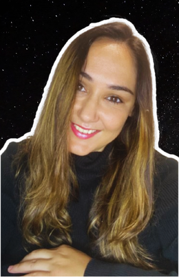

Nasci em Seattle, mas cresci no Porto, onde desde cedo me interessei pela microbiologia. Formei-me na Escola Superior de Biotecnologia e no Instituto Pasteur (Paris). Após o mestrado, retornei aos EUA, onde trabalhei em microbiologia clínica na Universidade de Washington e conheci a fascinante área da Astrobiologia! Realizei o doutoramento na Universidade de Westminster, em Londres, com foco no desenvolvimento de bioplásticos para impressão 3D. Atualmente, trabalho na Open University na área da proteção planetária. Além da ciência, sou apaixonada por fotografia de paisagem e astrofotografia. Fui a 1ª mulher a receber o título de 'UK Landscape Photographer of the Year'. Documentei a missão CAMões, a 1ª missão análoga em Portugal (sairá em breve!). Divulgar ciência é uma paixão. Já levei a astrobiologia a diversos públicos, desde a prestigiosa Royal Society, ao London Science Museum, e até escolas no Reino Unido para crianças que falam inglês e português!
Para ti, o que é a astrobiologia?
É a disciplina mais ousada, pois faz-nos refletir sobre o nosso lugar no cosmos e a possibilidade de vida além da Terra, desafiando as concepções sobre a nossa existência. Também me fascina por ser um campo relativamente jovem, repleto de novidades, e por conferir aos microrganismos, objeto da minha admiração e do meu trabalho, um papel central na busca por respostas às questões fundamentais relacionadas com vida.
Qual é a tua perspetiva, como Luso-Americana, sobre a astrobiologia em Portugal?
Portugal tem demonstrado um progresso notável tanto na astrobiologia quanto na exploração espacial. Embora haja interesses comuns com os EUA, acho que o foco da pesquisa em Portugal ainda pode ser ampliado para outras áreas da astrobiologia. Também as colaborações entre os dois países têm aumentado bastante, o que é extremamente positivo!
Qual é o papel da astrofotografia na comunicação de ciências do espaço?
A astrofotografia torna palpáveis e visíveis conceitos científicos que, de outra forma, podem ser difíceis de compreender. Ao capturar a beleza do universo, consegue despertar a curiosidade do público para explorar os fenómenos astronómicos de forma mais aprofundada. Como diz o ditado: uma imagem vale mais que mil palavras!
Que conselho dás aos futuros astrobiólogos portugueses?
É muito importante adotar uma perspectiva não convencional. Alguns dos grandes enigmas da astrobiologia precisam de soluções inovadoras, que vão para além dos limites do pensamento convencional. A astrobiologia, por ser multidisciplinar, exige um conjunto diversificado de habilidades, e por isso, aconselho o desenvolvimento constante de competências complementares e a colaboração com investigadores e projetos de diversos backgrounds.
Praia ou piscina?
Praia, sem dúvida! A natureza é meu refúgio. Cresci perto do mar, sou filha e neta de pescadores e com eles aprendi os segredos da vida marinha, e foi aí que a biologia despertou a minha curiosidade!